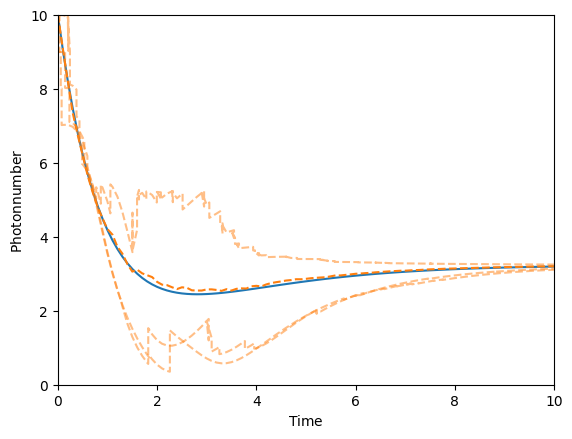

This notebook can be found on github
Pumped cavity
using QuantumOpticsusing PyPlotDefine parameters
using Random; Random.seed!(0)η = 0.9 # Pumping strengthκ = 1 # Decay rateNcutoff = 20 # Maximum photon numberT = [0:0.1:10;]Create Fock basis and all operators
basis = FockBasis(20)a = destroy(basis)at = create(basis)n = number(basis)H = η*(a+at)J = [sqrt(κ)*a]Define initial state
Ψ₀ = fockstate(basis, 10)ρ₀ = Ψ₀ ⊗ dagger(Ψ₀)Time evolution according to master equation
tout, ρt_master = timeevolution.master(T, ρ₀, H, J)Three different monte carlo trajectories
tout_example1, Ψt_example1 = timeevolution.mcwf(T, Ψ₀, H, J; seed=UInt(1), display_beforeevent=true, display_afterevent=true)tout_example2, Ψt_example2 = timeevolution.mcwf(T, Ψ₀, H, J; seed=UInt(2), display_beforeevent=true, display_afterevent=true)tout_example3, Ψt_example3 = timeevolution.mcwf(T, Ψ₀, H, J; seed=UInt(3), display_beforeevent=true, display_afterevent=true)Calculate expectation values $\langle n(t) \rangle$ by averaging single monte carlo trajectory expectation values
Ntrajectories = 50n_average = zeros(Float64, length(T))function fout(t::Float64, psi::Ket) i = findfirst(isequal(t), T) n_average[i] += real(expect(n, psi)/norm(psi)^2)endfor i=1:Ntrajectories timeevolution.mcwf(T, Ψ₀, H, J; fout=fout)endn_average /= NtrajectoriesPlot the result $\langle n(t) \rangle$ for the master equation, three different single MCWF trajectories and the average of many MCWF trajectories
plot(T, real(expect(n, ρt_master)))plot(T, n_average, "--")plot(tout_example1, real(expect(n, Ψt_example1)), "C1--", alpha=0.5)plot(tout_example2, real(expect(n, Ψt_example2)), "C1--", alpha=0.5)plot(tout_example3, real(expect(n, Ψt_example3)), "C1--", alpha=0.5)xlim(0, 10)ylim(0, 10)xlabel(L"\mathrm{Time}")ylabel(L"\mathrm{Photon number}")